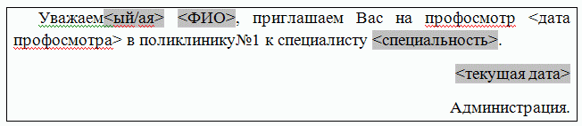

ЛАБОРАТОРНАЯ РАБОТА № WRD-07
СЕРИЙНЫЕ ДОКУМЕНТЫ
Теоретические сведения:
Задание: создать набор приглашений на профосмотр врачами-специалистами.
Создайте новый источник данных (Отдельный документ, содержащий только таблицу). Таблица должна включать следующие столбцы:
Пол приглашаемого человека (Обозначить буквами "м" или "ж"). Заголовок столбца — "Пол".
Фамилия приглашаемого человека. Заголовок столбца — "Фамилия".
Имя и отчество приглашаемого человека. Заголовок столбца — "ИО".
Специальность врача. Заголовок столбца — "Специальность".
Внесите в таблицу список из 10-12 человек. (Список не должен содержать фамилии одногруппников и должен быть уникальным для каждой выполненной работы). Сохраните источник данных.
Создайте основной документ — текст вызова для прохождения медосмотра специалистами. Оформите его.
Текст приглашения может быть, например, таким:

Добавьте поля слияния для фамилии, имени и отчества приглашаемого, специальности врача.
Используя поля WORD, добейтесь, чтобы обращение — "Уважаемый" или "Уважаемая" согласовывались с полом приглашаемого человека.
Используя поля WORD (Вставка->Дата и время), добейтесь, чтобы в конце текста появлялась текущая дата.
Произведите слияние в новый документ. Сохраните его под именем Диспансеризация.
Добейтесь, чтобы на странице было по два приглашения.